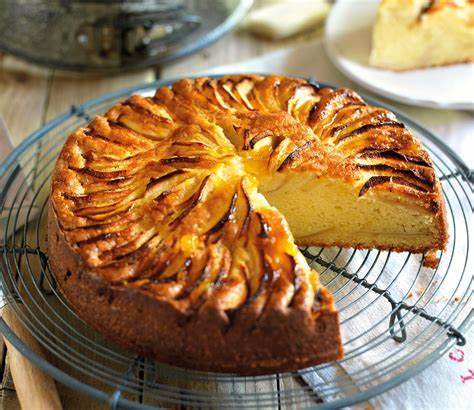

Tarta de manzana
Ingredientes para una tarta de manzana:
- -Masa para tarta (puede ser comprada o hecha con harina, mantequilla, azúcar, huevo y sal)
- -Manzanas (aproximadamente 4-5, peladas y cortadas)
- -Azúcar
- -Canela
- -Jugo de limón
Modo de preparación resumido:
- -Extender la masa en un molde para tarta.
- -Mezclar las manzanas con azúcar, canela y jugo de limón
- -Colocar las manzanas sobre la masa.
- -Hornear hasta que la masa esté dorada y las manzanas estén tiernas.
- -Opcional: glasear con mermelada de albaricoque para un brillo adicional.
- ¡Ahora tienes una deliciosa tarta de Manzana! Ajusta la receta según tus preferencias y disfruta.